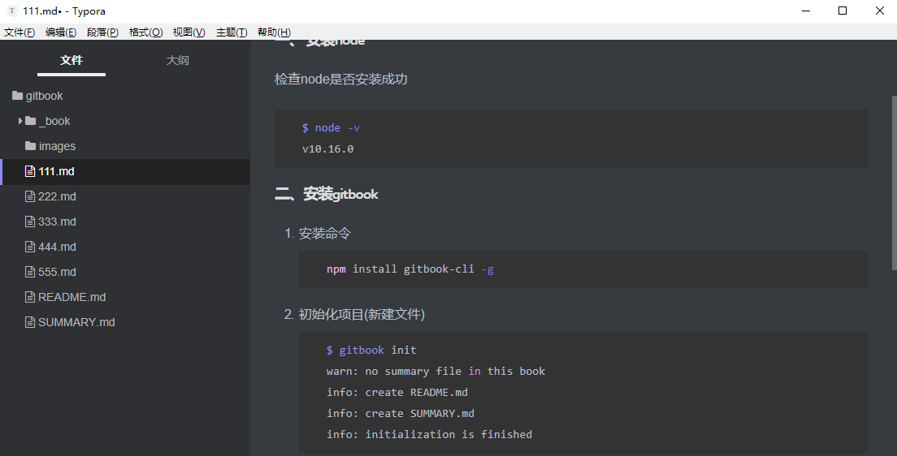
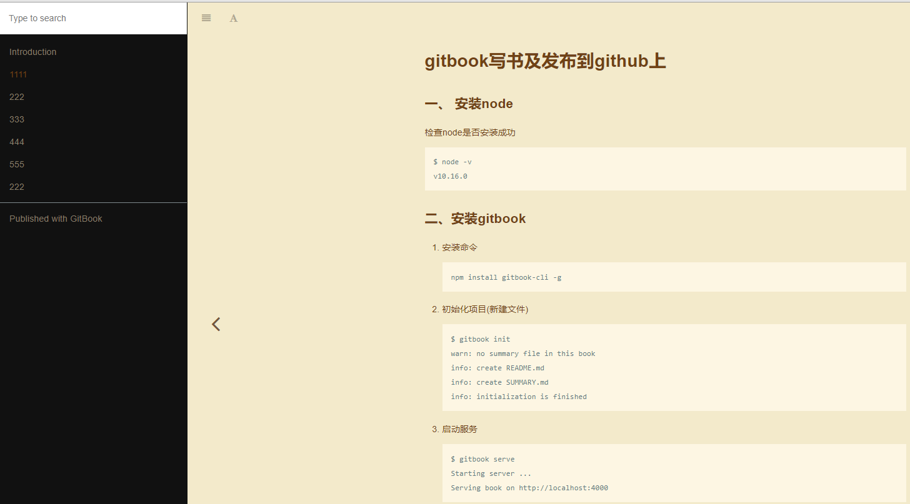

1. 使用gitbook搭建博客
1.1.1. 一、 安装node
检查node是否安装成功
$ node -v
v10.16.0
1.1.2. 二、安装gitbook
安装命令
npm install gitbook-cli -g初始化项目(新建文件)
$ gitbook init warn: no summary file in this book info: create README.md info: create SUMMARY.md info: initialization is finished启动服务，然后在浏览器地址栏中输入
http://localhost:4000便可预览书籍$ gitbook serve Starting server ... Serving book on http://localhost:4000更多命令介绍
gitbook build #生成网页而不开启服务器
1.1.3. 三、文件介绍
使用
gitbook init后会自动生成两个文件README.md和SUMMARY.mdREADME.md使用过git的都知道这个文件SUMMARY.md就是自己要写文章章节目录
系统文件目录如下

发布后网页样式

1.1.4. 四、通过配置文件来配置
在书籍下面都可以创建一个
book.json{ "title": "标题", "author": "作者", "description": "简单描素", "language": "zh-hans", "gitbook": "3.2.3", "styles": { "website": "./styles/website.css" }, "structure": { "readme": "README.md" }, "links": { "sidebar": { "我的博客": "https://blog.csdn.net/kuangshp128" } }, "plugins": [ "-sharing", "splitter", "expandable-chapters-small", "anchors", "github", "github-buttons", "donate", "sharing-plus", "anchor-navigation-ex", "favicon" ], "pluginsConfig": { "github": { "url": "https://github.com/kuangshp/" }, "github-buttons": { "buttons": [{ "user": "kuangshp", "repo": "mysql", "type": "star", "size": "small", "count": true }] }, "donate": { "alipay": "./source/images/donate.png", "title": "", "button": "赞赏", "alipayText": " " }, "sharing": { "douban": false, "facebook": false, "google": false, "hatenaBookmark": false, "instapaper": false, "line": false, "linkedin": false, "messenger": false, "pocket": false, "qq": false, "qzone": false, "stumbleupon": false, "twitter": false, "viber": false, "vk": false, "weibo": false, "whatsapp": false, "all": [ "google", "facebook", "weibo", "twitter", "qq", "qzone", "linkedin", "pocket" ] }, "anchor-navigation-ex": { "showLevel": false }, "favicon": { "shortcut": "./source/images/favicon.jpg", "bookmark": "./source/images/favicon.jpg", "appleTouch": "./source/images/apple-touch-icon.jpg", "appleTouchMore": { "120x120": "./source/images/apple-touch-icon.jpg", "180x180": "./source/images/apple-touch-icon.jpg" } } } }关于
book.json字段的介绍- title: 书籍标题
- author:书籍作者
- description: 本书描述
- language:语言(中文设置 "zh-hans" 即可)
- gitbook:gitbook的版本
- styles:自定义样式
- structure: readme文件的位置(指定 Readme、Summary、Glossary 和 Languages 对应的文件名)
- links:链接跳转{在左侧导航栏添加链接信息}
- plugins:插件
- pluginsConfig:配置插件的属性
插件介绍
GitBook 有 插件官网，默认带有 5 个插件，highlight、search、sharing、font-settings、livereload，如果要去除自带的插件， 可以在插件名称前面加
-，比如："plugins": [ "-search" ]如果要配置使用的插件可以在 book.json 文件中加入即可，比如我们添加 plugin-github，我们在 book.json 中加入配置如下即可：
{ "plugins": [ "github" ], "pluginsConfig": { "github": { "url": "https://github.com/dolojia" } } }然后在终端输入
gitbook install ./即可。如果要指定插件的版本可以使用 plugin@0.3.1，因为一些插件可能不会随着 GitBook 版本的升级而升级。
1.1.5. 五、发布到github
在git上创建项目
gitbook将本地gitbook文件与GitHub上项目同步
gi$ git init $ git add . $ git commit -m "first commit" $ git remote add origin https://github.com/dolojia/gitboook.git $ git push -u origin master在本地创建
gh-pages分支$ git checkout -b gh-pages $ git push $ git push --set-upstream origin gh-pages
删除分支下文件，只保留_book/目录下文件的文件及.git文件夹，提交文件至gh-pages分支。
- 提交完成后到github仓库的设置中看一下，gh-pages服务是否自动开启，如果没有的话在
Source中选择gh-pages branch，保存刷新，等待几分钟就好了

1.1.6. 六、自动发发布脚本
以上操作过于繁杂，避免每次更新文件都要倒腾，写一个自动提交代码脚本自动同步代码至
master跟gh-pages分支，创建文件push-gitbook.sh,内容如下：cd gitbook &&\ git checkout master &&\ gitbook init &&\ gitbook build &&\ git add . &&\ git commit -m 'update gitbook' &&\ git push origin master &&\ git checkout gh-pages &&\ rm -rf * &&\ git checkout master -- _book &&\ mv _book/* ./ &&\ rm -rf _book &&\ rm -rf publish.sh &&\ git add . &&\ git commit -m 'push-gitbook.sh gh-pages' &&\ git push origin gh-pages &&\ git checkout master
1.1.7. 七、END
- 至此全部操作已经完成，接下来每次在本地更新书籍内容后，先生成静态页面，然后提交
master分支，再提交、gh-pages分支就可以了。 - 最后通过下面地址访问线上内容：
https://dolojia.github.io/gitbook